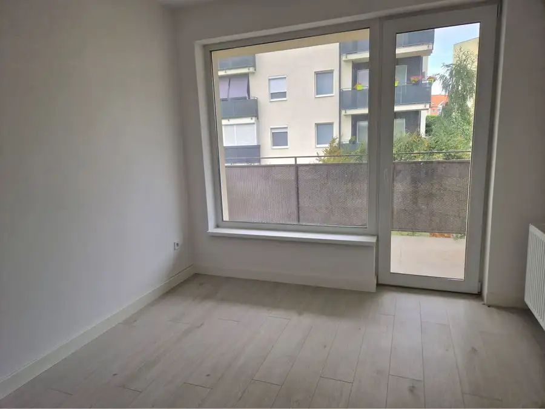
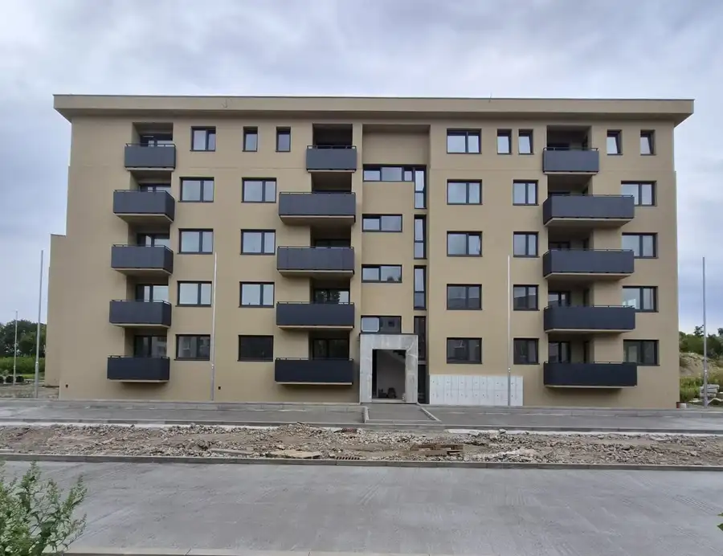
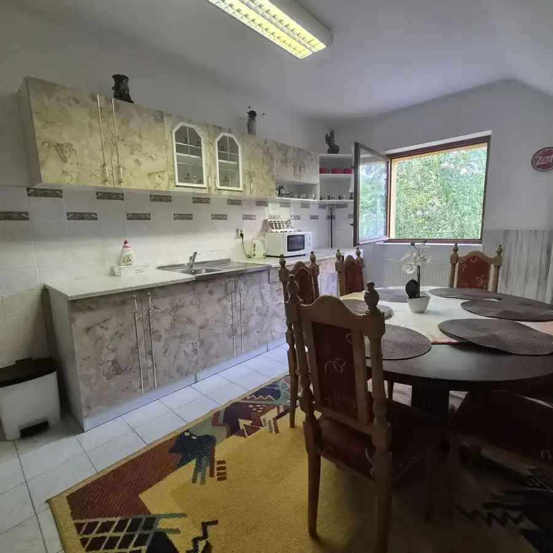

Úžasné 2 a 3 - izbové byty v obytnom parku KISERDŐ LAKÓPARK
Dunajská Streda
- Dispozícia3-izbový
- Plocha48 m²
- Vlastníctvofiremné
O nehnuteľnosti
Realitná kancelária A-W Real Vám ponúka na predaj 2 a 3 - izbové byty v novom obytnom parku v Dunajskej Strede KISERDŐ LAKÓPARK, kde sa plánuje výstavba 95 bytov v troch bytových domoch. 42 bytov bude 2 - izbových s priemernou úžitkovou plochou 40 m2 a 63 bytov 3 - izbových s priemernou úžitkovou plochou 73 m2. Každý byt má balkón alebo terasu. V obytnom parku bude 151 parkovacích miest, z toho 62 podzemných a 89 vonkajších státí.
Byty sa predávajú v stave štandard: sanita, dvere, podlahy, (bez kuchynskej linky).
Balkóny/ terasy sú zahrnuté v cene ( 500€/m2).
Parkovanie - možnosť dokúpenia
- vonkajšie státie 8.000€/ks
- garážové státie 18.500€/ks
Pivničné kobky - možnosť dokúpenia: 1.700€/m2
Ceny sú s DPH.
Objekt B nemá pivnice!
Pivnice sú len v objekte A a C.
Bytovky sú vo výstavbe.
Obytný park ktorý sa pripravuje v Dunajskej Strede leží v Trnavskom kraji na Podunajskej nížine. Mesto Dunajská Streda sa nachádza 29 km od Galanty, 45 km od Bratislavy a 39 km od maďarského mesta Győru. Má takmer 23.000 obyvateľov. Nachádza sa tu množstvo škôl, obrovské obchodné centrum, dve väčšie zdravotné kliniky, 18 hektárové termálne kúpalisko s 10 bazénmi a taktiež športové haly a zariadenia.
CELÝ PROJEKT
Plocha pozemku: 10.532 m2
Bytová plocha: 6.190 m2
Plocha zelene: 4.229 m2
Počet parkovacích miest: 151 státí ( 62 podzemných a 89 vonkajších státí)
Cena 2 - izbových bytov je od 136.800€ a cena 3 - izbových bytov je od 172.200€. Ceny sú vrátane provízie a kvalitného servisu realitnej kancelárie A-W Real.
Ak Vás moja ponuka zaujala alebo by ste chceli získať bližšie informácie neváhajte a skontaktujte sa so mnou na tel. čísle .
Zarezervujte si Váš vysnívaný domov ešte dnes.
Našim klientom poskytujeme:
- prvotriedny a profesionálny prístup pri predaji alebo kúpe Vašej nehnuteľnosti
- kompletný právny servis a poradenstvo
- cenovú analýzu nehnuteľnosti
- sprostredkovanie poskytnutia úveru
- správny poplatok na kataster ku kúpnej zmluve ( v hodnote 100€)
- profesionálne fotenie a 3D obhliadky
Parametre
| Úžitková plocha | 48 m² |
|---|---|
| Vlastníctvo | firemné |
| Balkón | áno |
| Terasa | áno |
| Pivnica | áno |
| Novostavba | áno |
| Dátum zverejnenia | 15. 9. 2026 |
Kde to je
Mohlo by Vás zaujímať

Byt10 158 800 €NOVOSTAVBA! Krásny, moderný a priestranný 3-izbový byt s veľkou logiou Dunajská Streda 3-izbový79 m² Realitná kancelária A-W Real Vám ponúka na predaj krásny a priastranný 3-izbový byt v Dunajskej Strede s veľkou logiou. Úžitková plocha bytu je 79 m2…
Byt10 136 800 €Úžasné 2-izbové byty v obytnom parku KISERDŐ LAKÓPARK Dunajská Streda 2-izbový48 m² Realitná kancelária A-W Real Vám ponúka na predaj 2- izbové byty v novom obytnom parku v Dunajskej Strede KISERDŐ LAKÓPARK, kde sa plánuje výstavba…
Byt10 Cena dohodouPrenájom 2-izbového apartmánu v Dunajskej Strede Dunajská Streda 2-izbový120 m² Ponúkame na prenájom kompletne zariadený 2-izbový priestor v polyfunkčnej budove v Dunajskej Strede, vhodný aj pre ubytovanie až 8 osôb. Úžitková…